Display filters use a different syntax from capture filters (BPF). Why are they not interchangeable, and what are the exceptions where they happen to look the same (give an example)?
The Status Bar shows the displayed packet count after a filter is applied. Wireshark colorizes the filter field green, yellow or red. What does each color mean, and which one is the most subtle trap for analysts?
Understand the Purpose of Display Filters
Display filters enable you to focus on specific packets based on criteria you define. You can filter on traffic you want to see (inclusion filtering) or filter out undesired traffic (exclusion filtering). Display filters can be created using several techniques: typing directly (with auto-complete), applying saved filters, using Expressions, right-click filtering, or applying conversation/endpoint filters.
When you apply a display filter, the Status Bar indicates the total packets and packets displayed, as shown in Figure 140. In this example, 4,900 total packets are in the file, but only 180 are displayed because they match the filter.
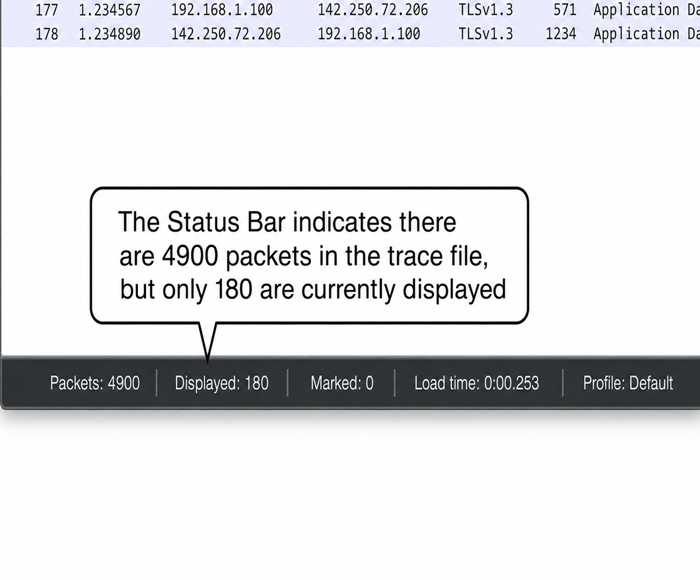
Wireshark's display filters use a proprietary Wireshark filter format while capture filters use the Berkeley Packet Filtering (BPF) format — they are NOT interchangeable. BPF is also used by tcpdump. In rare instances, some capture and display filters happen to look the same — for example, tcp is valid in both formats.
Examples of simple display filters (field or protocol must be in lowercase):
| Filter | Displays |
|---|---|
tcp | All TCP traffic |
ip | IPv4 traffic only |
ipv6 | IPv6 traffic |
udp | All UDP traffic |
icmp | All ICMP traffic |
arp | All ARP traffic |
dns | All DNS traffic |
http.request.method=="GET" | HTTP GET requests only |
tcp.window_size < 1460 | TCP packets with small window size |
tcp.analysis.flags | Packets with TCP analysis flags (based on characteristics, not actual fields) |
Create Display Filters Using Auto-Complete
If you type tcp. (include the period) in the display filter area, Wireshark's auto-complete feature shows all possible display filter values beginning with tcp as shown in Figure 141. Note that tcp without the period is a valid filter (green background), but tcp. is not (you must complete it or remove the period).
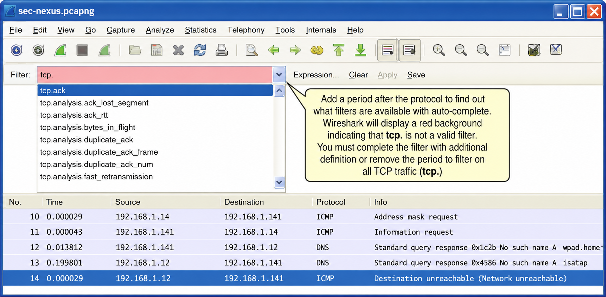
Apply Saved Display Filters
Click the Filter button to the left of the display filter area to open the Display Filter window (Figure 142). Save frequently-used filters here. To create a new filter, click New, then enter the filter name and string. This is a common mistake: you must click New to save a new filter — just editing an existing entry replaces it.
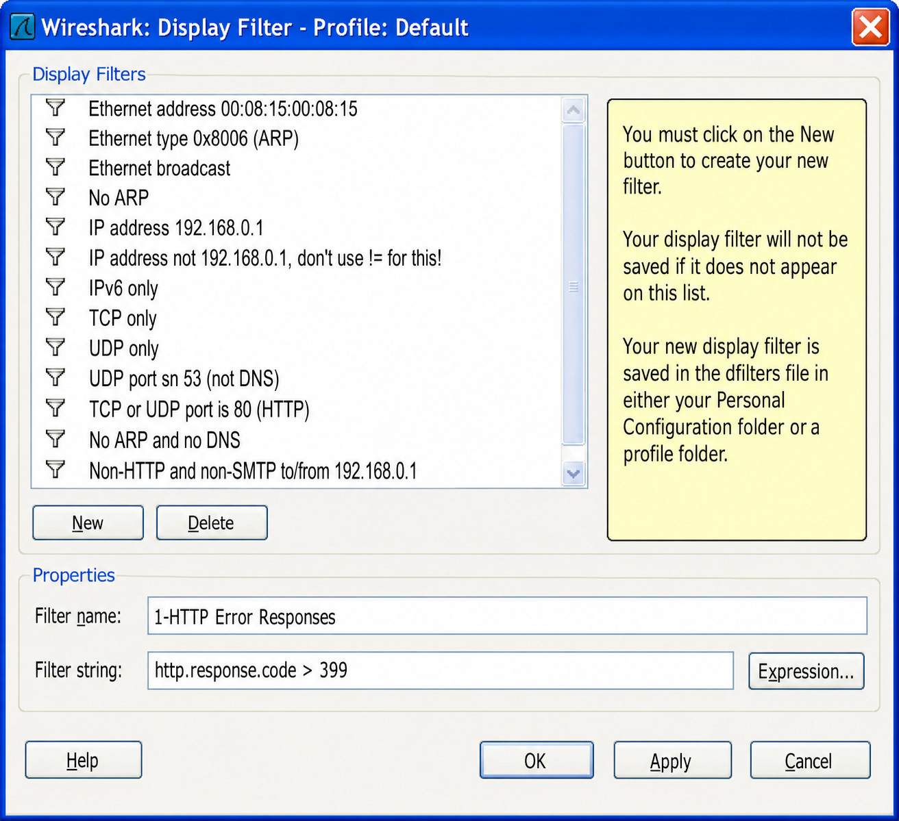
Use Expressions for Filter Assistance
The Expression button to the right of the Display Filter field walks you through the filter creation process. Some protocols have predefined values for individual fields (e.g., FTP response codes as shown in Figure 143). Expressions consist of field names, relations, values, predefined values and range. Select is present to build a filter for the existence of a protocol or field.
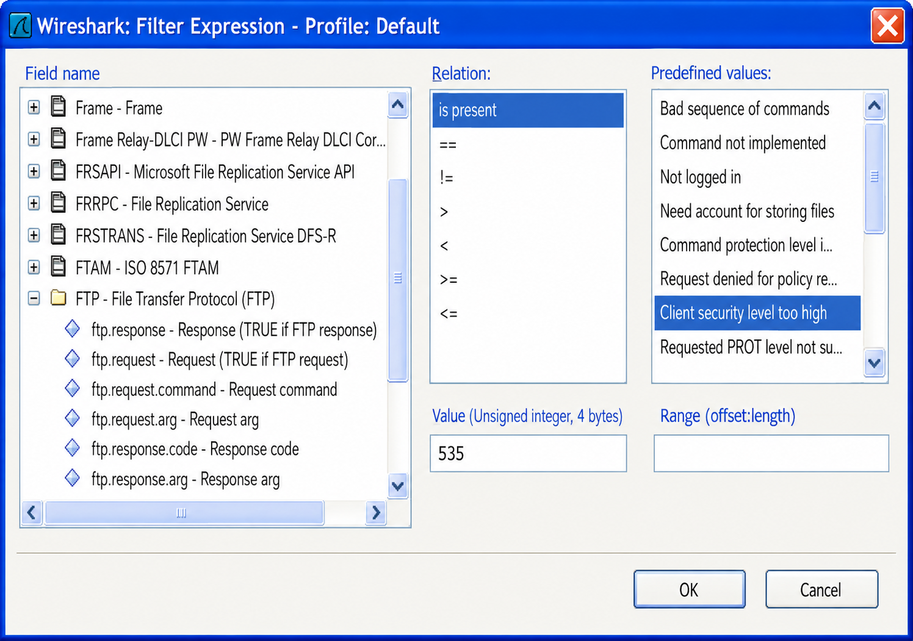
"Apply as Filter" and "Prepare a Filter" look similar but behave very differently. What is the practical difference, and when would you choose Prepare a Filter over Apply as Filter for building a complex exclusion filter?
You can create a filter based on the Conversations or Endpoints window. What one additional option does the Conversations window offer that the Endpoints window does not?
Right-Click Filtering
Right-click filtering works in the Packet List pane and the Packet Details pane (but NOT the Packet Bytes pane). Right-click on a field and select Apply as Filter | Selected or Prepare a Filter | Selected as shown in Figure 144.
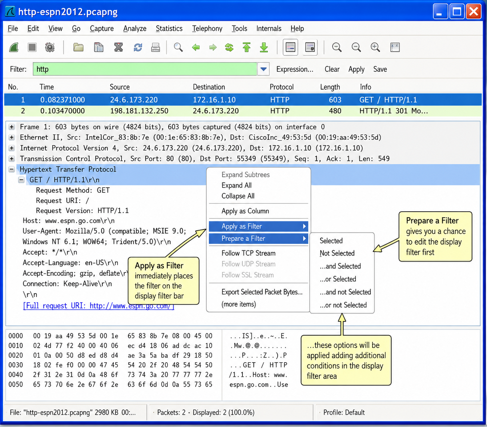
Apply as Filter
Use Apply as Filter to apply the filter immediately. After applying, you can expand the filter using additional options:
- Not Selected: Create an exclusion filter
- … and Selected: Must match existing filter AND the selection
- … or Selected: Must match either existing filter OR the selection
- … and Not Selected: Must match existing filter AND NOT selection
- … or Not Selected: Must match either existing filter OR NOT selection
Prepare a Filter
Right-click and select Prepare a Filter to create a filter without applying it immediately. This is useful for building longer, more complex filters. For example, to filter on ICMP Destination Unreachable/Port Unreachable packets, first select the ICMP Type 3 value, then select the ICMP Code 3 value using the "…and Selected" operation, then edit and apply.
Filter on Conversations and Endpoints
Right-click on a conversation in the Conversations window and select Prepare a Filter or Apply as Filter. As shown in Figure 145, when creating filters based on a conversation, you can define the direction of travel in addition to the basic filter type — based on the Address A and Address B column titles. The Endpoints window offers the same capability but without the directional option.
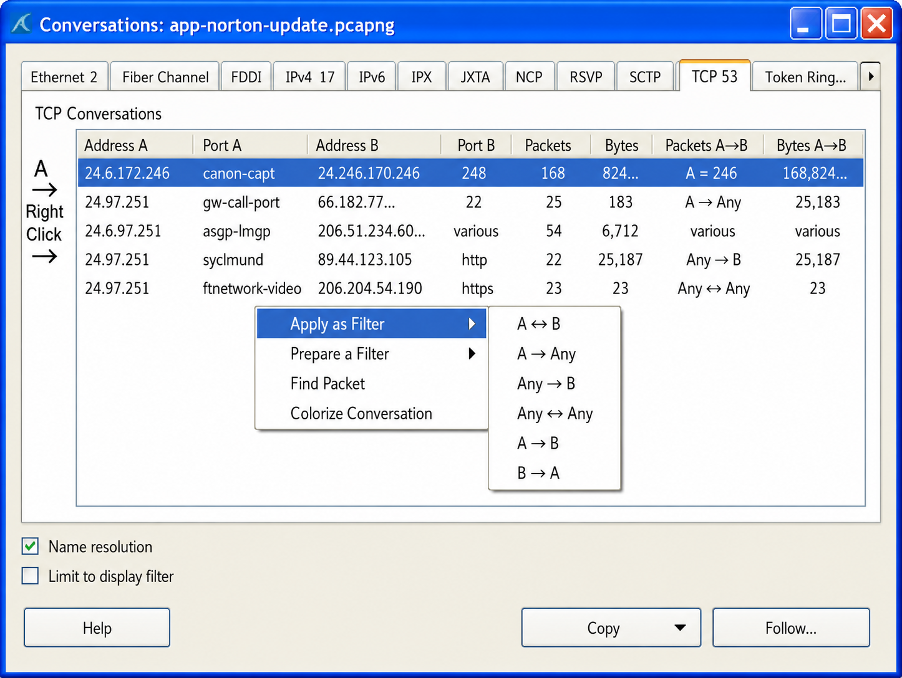
Copy | As Filter
Right-click a field in the Packet List or Packet Details pane and select Copy | As Filter to buffer a display filter based on that field. Very useful for creating coloring rules, building complex display filters or copying filters between Wireshark instances.
Filter on the Protocol Hierarchy Window
Select Statistics | Protocol Hierarchy and right-click any entry to create a filter based on that protocol or application. This is a key task when analyzing traffic from a potentially compromised host — right-click on unusual protocols to isolate and examine them.
The filter ip.addr != 10.2.4.1 does NOT work as most people expect. What does it actually match, and what is the correct syntax to exclude all traffic to/from 10.2.4.1?
Offset display filters (e.g., eth.src[4:2]==22:1b) are a more complex form. What do the numbers in the square brackets mean, and when would you need to use this type of filter?
Display Filter Syntax & Operators
Every field shown in the Packet Details pane can be used to create display filters. Highlight a field and the related display filter value appears in the status bar. In Figure 146, the TCP Calculated Window Size field is selected — the field name tcp.window_size is shown in the status bar, enabling filter creation.
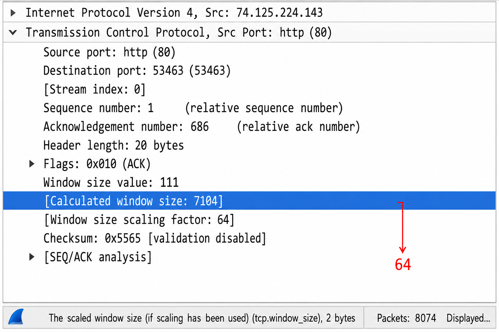
You can also create display filters on packet characteristics (not actual packet fields). In Figure 147, selecting the TCP analysis line "[This is a tcp window update]" shows the display syntax tcp.analysis.window_update — you can right-click and apply this filter even though the field doesn't physically exist in the packet.
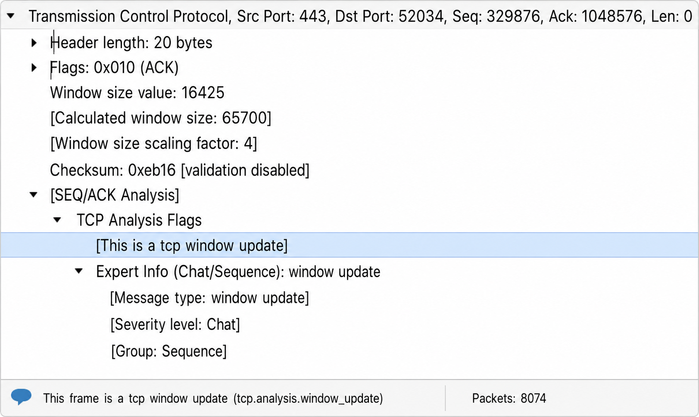
Combine Display Filters with Comparison Operators
| Operator | Symbol | Text |
|---|---|---|
| Equal to | == | eq |
| Not equal to | != | ne |
| Greater than | > | gt |
| Less than | < | lt |
| Greater than or equal | >= | ge |
| Less than or equal | <= | le |
| AND | && | and |
| OR | || | or |
| NOT | ! | not |
| Contains | contains | |
| Matches (regex) | matches |
ip.addr != 10.2.4.1 shows a packet if EITHER IP address is not 10.2.4.1 — which is almost always true. Use !ip.addr==10.2.4.1 instead.Filter on Specific Bytes (Offset Filters)
Offset filters (also called Subset Operators) use the format proto[offset:length]. Use these when no simpler filter is available.
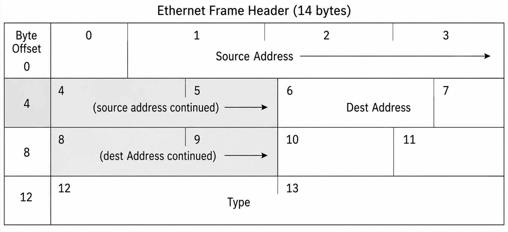
eth.src[4:2]==22:1b # Look at bytes 5-6 (0-indexed) of Ethernet src address ip[14:2]==96:2c # Look at bytes 15-16 of IP header (end of source IP)
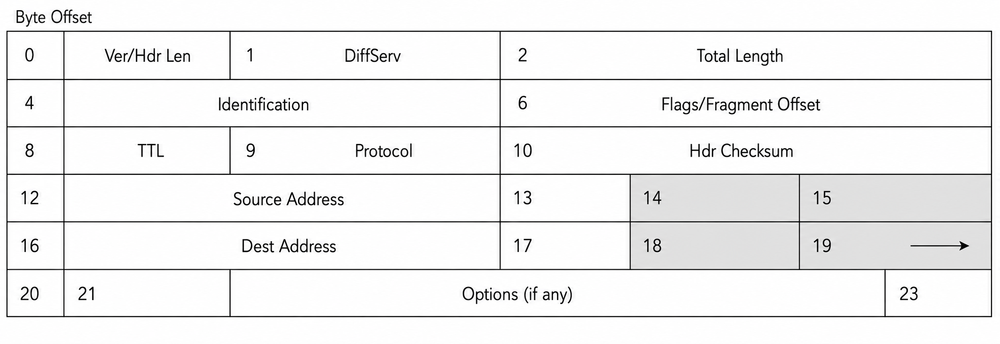
Use Parentheses to Control Operator Precedence
Parentheses change how filters are evaluated:
(ip.src==192.168.0.105 and udp.port==53) or tcp.port==80 # DNS from 192.168.0.105 PLUS all port 80 traffic on the network ip.src==192.168.0.105 and (udp.port==53 or tcp.port==80) # DNS or HTTP from 192.168.0.105 ONLY
The matches operator uses Perl regular expressions (regex). How would you build a filter to find HTTP GET requests for files ending in .zip or .exe in either upper or lower case? What does (?i) mean in regex?
Display filter macros create shortcuts for complex filters. How are they stored, where is the file, and how does the syntax ${5ports:5600;5603;6400;6500;6700} work?
Advanced Filters & Filter Management
Filter on the Existence of a Field
Sometimes you just want to know if a particular field exists:
http.cookie or http.set_cookie # Show HTTP packets where cookies were exchanged tcp.analysis.flags && !tcp.analysis.window_update # All TCP analysis events except Window Updates tcp.analysis.lost_segment # Show lost TCP segments specifically tcp.analysis.duplicate_ack # Show duplicate ACKs specifically
Find Keywords in Upper or Lower Case
The matches operator uses Perl regex (provided by libpcre) to search within string/text fields:
http.request.method=="GET" && (http matches "\.(?i)(zip|exe)")
# Find GET requests for files ending in .zip or .exe (case insensitive)
frame matches "(?i)[A-Z0-9._%-]+@[A-Z0-9.-]+\.[A-Z]{2,4}"
# Find email addresses anywhere in the frame
http.host && !http.host matches "\.com$"
# HTTP traffic to hosts NOT ending in .com (the http.host check avoids false positives)
Display Filter Macros
Macros create shortcuts for more complex display filters. Select Analyze | Display Filter Macros | New to create one. Macros are saved in dfilters_macros in your Personal Configuration folder. The syntax uses dollar signs before variable numbers.
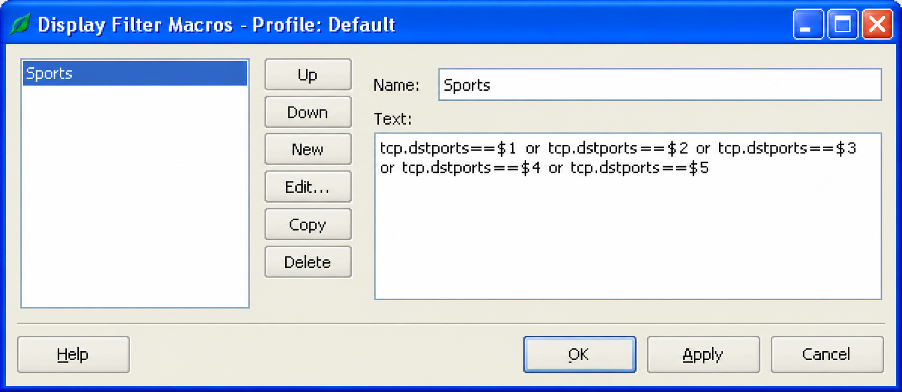
${5ports:5600;5603;6400;6500;6700}
# Expands to: tcp.dstport==5600 || tcp.dstport==5603 || tcp.dstport==6400 || ...
${tcp_conv:192.168.1.1;192.168.1.99;1201;2401}
# A macro for a specific TCP conversation by IP addresses and port numbers
Avoid Common Display Filter Mistakes
The most common mistake involves the != operator on fields with multiple occurrences (like ip.addr, tcp.port, udp.port). The filter ip.addr != 10.2.4.1 means "show a packet that has an ip.addr field with a value other than 10.2.4.1" — since there are two IP fields (source and destination), this will show almost every packet. Use !ip.addr==10.2.4.1 instead. The same issue applies to IPv6 filtering.
Manually Edit the dfilters File
Display filters can be edited through the GUI or directly in the dfilters text file (no extension) in the Global Configurations directory. New filters are added and a copy placed in Personal Configurations or active profile directory. The syntax is: "filter name" filter string. You can add indenting and titles to your display filter list by using underscores inside the name quotes.
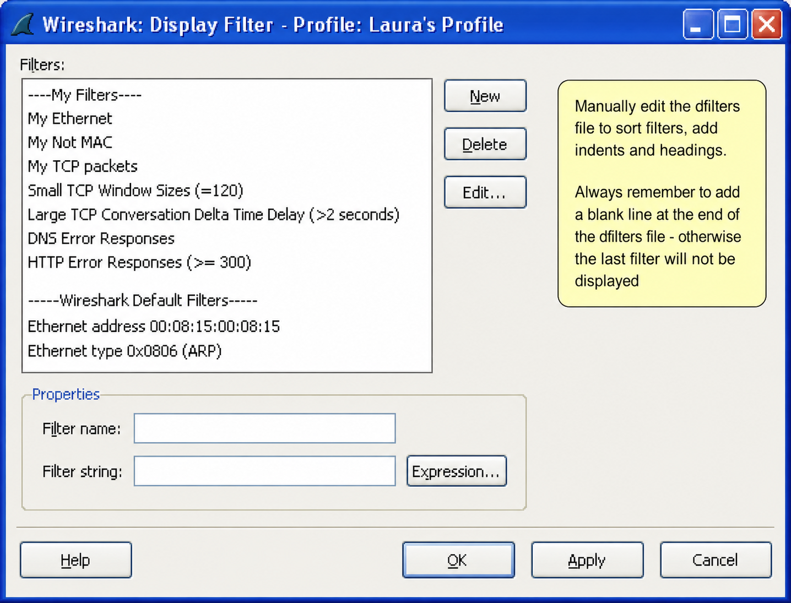
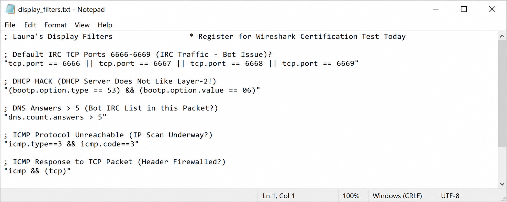
Case Studies
There appeared to be way too many connections to a documentation server at specific times during the day. The server administrators thought someone was attacking the server and wanted to know how many active connections had been established throughout the day and by whom.
The solution was to use a display filter for the third packet of the TCP handshake to catch all successful connections and plot this on an IO Graph:
(tcp.flags==0x10) && (tcp.seq==1) && (tcp.ack==1)
The first part filtered for packets with just the ACK bit set (0x10). The second part looked for TCP Sequence Number = 1 and TCP Acknowledgment Number = 1. With relative sequence numbering enabled (Wireshark default), these values are always seen in the third packet (the ACK completing the three-way handshake).
The connections were plotted in the IO Graph with the red line in Fbar format. Sure enough, connections spiked around 2pm each day — over 1,000 connections from one of the documentation server administrator machines. It turned out someone in their group was testing a new document management package that flooded the documentation server with connections every time they ran it.
The team could easily show the source of the connections and recommend against the lousy program they were about to buy — saving the company a ton of money and headache using Wireshark!
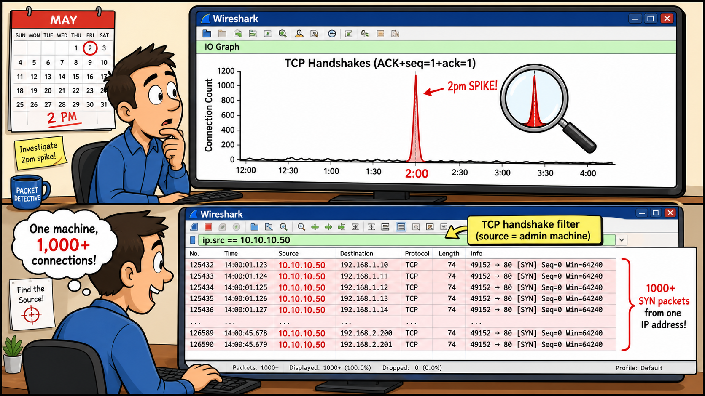
To analyze Twitter traffic, a display filter was created for all traffic to/from one IP address (ip.addr==192.168.0.106), then idle and background traffic was systematically filtered out — traffic to the printer, router management port, DHCP, ARP, traffic from an iPhone bridged onto the wired network, Google Analytics, Google Malware updates from Firefox, World News and BBC background feeds from Firefox, and anything else not related to Twitter.
The final display filter was extremely long and complex:
ip.addr==192.168.0.106 && !srvloc && !dns && !ip.addr==74.6.114.56 && !ip.addr==239.255.255.250 && !ip.addr==96.17.0.0/16 && !smb && !nbns && !ip.addr==192.168.0.103 && !ip.addr==64.74.80.187 && ...and more
Although the goal was to analyze Twitter traffic, the conclusion was that all the plugins added to Firefox made the browser way too chatty — they were talking all the time in the background. Network name resolution was temporarily enabled to identify targets, and the plugins making constant background connections were uninstalled.
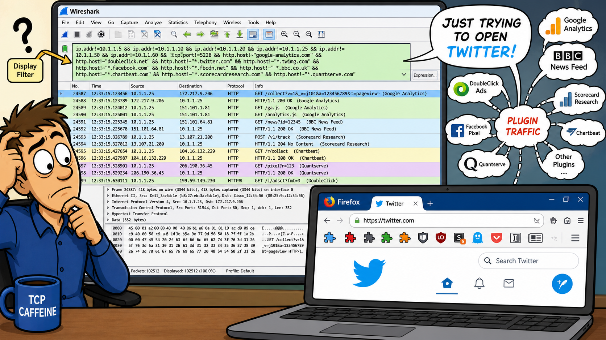
Computer viruses and worms were a great learning time for me with packet analysis. I was very new at packet analysis and would just fire off traces on a VLAN to get a "feel" of what was running on my network — "unofficial baselining." I knew the sorts of applications I should expect to see: NCP, Web, Telnet, Citrix, etc. If there was something I didn't recognize, I'd filter down to it just to get a better understanding of whether it should be running.
Then, the worms hit. I spent many hours and days with a monitor session on our server VLAN watching how worms would spread to help identify, isolate and inoculate infected workstations. What I would see was what appeared to be ping sweeps or port scans coming from multiple hosts.
Once I'd captured enough packets I was able to build better display filters to identify just these sweeps so that I could isolate the infected workstations and help the desktop and server teams clean these devices before allowing them back on the network.
With practice, it didn't take long to generate lists of IP addresses or device names to provide the desktop folks so they could start cleaning. The lesson: baselining — even "unofficial" baselining through regular observation — gives you an intuition for what's normal, so abnormal stands out immediately.
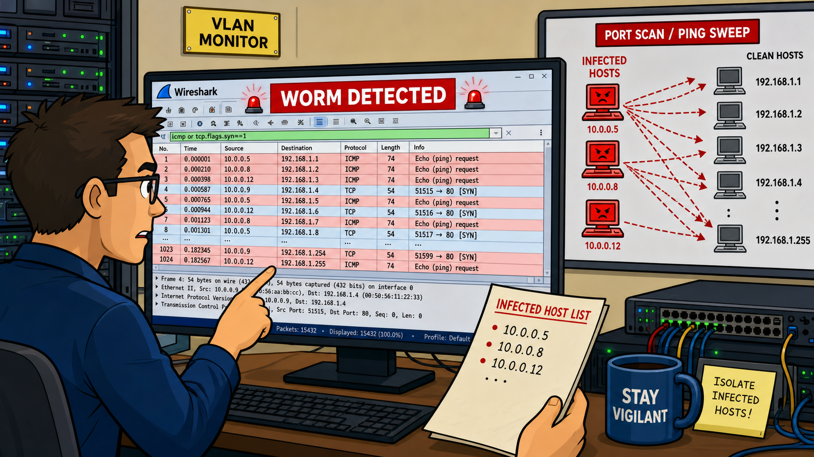
Display filters are used to focus on specific packets, protocols, conversations or endpoints of interest. Display filters use the special Wireshark syntax — they are not interchangeable with capture filters which use the BPF filter syntax (also used by tcpdump).
Wireshark provides automatic error checking of your display filter syntax (green = correct syntax, red = incorrect syntax, yellow = may yield unexpected results). You can also use Wireshark's Expressions to create filters using predefined fields and field values.
One of the fastest ways to create a display filter is to right-click on a field and select either Apply as Filter or Prepare a Filter. You can use comparison operators to combine multiple display filters, but be careful of the parentheses — their position can alter a filter's meaning. Display filters are saved in the dfilters file and can be shared by simply sending someone a copy of the file.
Review Questions
Display filters use Wireshark's specialized display filter format. Capture filters use the Berkeley Packet Filtering (BPF) format (also used by tcpdump). Filters created with Wireshark's display filter format and filters created with the BPF format are NOT interchangeable.
This filter displays packets that are both ARP and BOOTP/DHCP packets — which is impossible. A packet cannot be both ARP and BOOTP/DHCP at the same time. The correct filter would be arp || bootp (using OR instead of AND).
Prepare a Filter simply creates the filter and displays it in the Display Filter window — the filter is not applied yet. This allows you to add to the filter or edit the filter before applying it. Apply as Filter applies the filter to the traffic immediately.
Filter A displays DNS/port 53 traffic from 192.168.0.1 PLUS all HTTP/port 80 traffic on the entire network. Filter B displays DNS/port 53 OR HTTP/port 80 traffic from 192.168.0.1 ONLY. The position of the parentheses changes which condition the ip.src qualifier applies to.